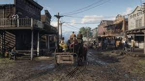
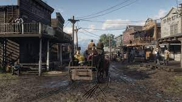

Red Dead Redemption 2
Red Dead Redemption 2 is een actievol open wereldspel, dat zich afspeelt in het Wilde Westen in 1899. Spelers nemen de rol aan van Arthur Morgan, een outlaw in een bende die op de vlucht is voor de wet.
In het verhaal moet Arthur Morgan, samen met zijn bendeleden, overleven in een meedogenloze wereld waarin ze worden opgejaagd door rivaliserende bendes en de wet.
Actie
Open wereld
Verhaalgedreven
- Action-adventure
- Developer: Rockstar Games
- Release: 2018
 

Systeemeisen
- OS: Windows 7/8/10 (64-bit)
- Processor: Intel Core i5-2500K / AMD FX-6300
- Memory: 8 GB RAM
- Graphics: Nvidia GeForce GTX 770 2GB / AMD Radeon R9 280
- DirectX: Version 11
- Storage: 150 GB available space
- Sound Card: DirectX Compatible
Recenties
- "the only bad thing about the story is the emptiness you feel as soon as it ends"
- "Is there a pill I can eat to forget everything? because I would eat it to play this game again"
- "the only crime Arthur is guilty of, is stealing my heart"